산업안전기사 (2007-05-13 기출문제)
1과목: 안전관리론
1. 다음 중 주의의 특징과 거리가 먼 것은?
- 변동성
- 선택성
- 특수성
- 방향성
(정답률: 70%)

2. 다음 중 재해예방의 4원칙과 관련이 가장 적은 것은?
- 모든 재해의 발생 원인은 우연적인 것으로 발생한다.
- 재해손실은 사고가 발생할 때 사고 대상의 조건에 따라 달라진다.
- 재해예방을 위한 가능한 안전대책은 반드시 존재한다.
- 재해는 원칙적으로 원인만 제거되면 예방이 가능하다.
(정답률: 57%)
3. 다음의 교육내용과 관련 있는 교육은?
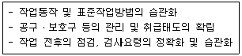
- 지식교육
- 기능교육
- 태도교육
- 문제해결교육
(정답률: 71%)
4. 무재해 운동을 추진하기 위한 조직의 3기둥으로 볼 수 없는 것은?
- 경영층의 엄격한 안전방침 및 자세
- 직장 자주활동의 활성화
- 전 종업원의 안전요원화
- 라인화의 철저
(정답률: 66%)
5. 1일 근무시간이 9시간, 지난 한 해 동안 근무한 일수가 290일인 A 사업장의 재해건수는 24건, 의사진단에 의한 총 휴업일수는 3650일이었다. 해당 사업장의 도수율과 강도율은 얼마인가? (단, 사업장의 평균근로자수는 450명이다.)
- 도수율: 0.02, 강도율: 2.47
- 도수율: 2.04, 강도율: 0.26
- 도수율: 20.43, 강도율: 0.26
- 도수율: 20.43, 강도율: 2.47
(정답률: 47%)
6. 다음 중 부주의의 발생 원인별 대책방법이 올바르게 짝지어진 것은?
- 소질적 문제 : 안전교육
- 경험, 미경험 : 적성배치
- 의식의 우회 : 작업환경 개선
- 작업순서의 부적합 : 인간공학적 접근
(정답률: 64%)
7. 연평균 500명의 근로자가 근무하는 사업장에서 지난 한해동안 20명의 재해자가 발생하였다. 만약 이 사업장에서 한 작업자가 평생 동안 작업을 한다면 약 몇 건의 재해가 발생하겠는가? (단, 1인당 평생근로시간은 120000시간으로 한다.)
- 1건
- 2건
- 4건
- 6건
(정답률: 64%)
8. 다음 중 안전모의 성능기준 항목이 아닌 것은?
- 내관통성
- 충격흡수성
- 내열성
- 내수성
(정답률: 72%)
9. 유기용제용 방독마스크의 정화통에 주로 사용되는 정화제는?
- 호프카라이트
- 큐프라마이트
- 활성탄
- 소다라임
(정답률: 68%)
10. 위험기계ㆍ기구의 방호장치 성능검정규정에서 가설기자재와 방폭기기를 제외한 위험기계ㆍ기구 방호장치의 합격표지에 표시되어야 하는 사항이 아닌 것은?
- 제조자(또는 수입자)
- 방호장치명
- 합격번호
- 제조일
(정답률: 32%)
11. 점검시기에 따른 안전점검의 종류로 볼 수 없는 것은?
- 수시점검
- 정기점검
- 특수점검
- 임시점검
(정답률: 53%)
12. 종합재해지수(FSI)에 대한 설명으로 틀린 것은?
- 강도율과 도수율의 기하평균이다.
- 강도율을 도수율로 나눈 값의 제곱근이다.
- 어떤 집단의 안전성적을 비교하는 수단으로 사용된다.
- 재해의 빈도와 상해정도의 강약을 종합하여 나타낸다.
(정답률: 64%)
13. 다음 중 적응기제(適應機制)에 있어 도피적 기제의 유형에 해당되지 않는 것은?
- 합리화
- 고립
- 퇴행
- 억압
(정답률: 75%)
14. 다음 중 용접보안면의 무게와 관련한 기준으로 옳은 것은?
- 필터플레이트를 제외하고 헬멧형은 600g 이하, 핸드실드형은 500g 이하이어야 한다.
- 커버플레이트를 제외하고 헬멧형은 600g 이하, 핸드실드형은 500g 이하이어야 한다.
- 필터플레이트 및 커버플레이트를 제외하고 헬멧형은 500g 이하, 핸드실드형은 560g 이하이어야 한다.
- 필터플레이트 및 커버플레이트를 제외하고 헬멧형은 560g 이하, 핸드실드형은 500g 이하이어야 한다.
(정답률: 30%)
15. 동기부여와 관련하여 다음과 같은 레윈(Lewin.K)의 법칙에서 “P"가 의미하는 것은?
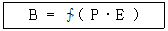
- 개체
- 인간의 행동
- 심리적 환경
- 인간관계
(정답률: 70%)
16. 안전교육방법의 4단계 중 1단계에 해당되는 것은?
- 실제로 시켜본다.
- 작업의 내용을 설명한다.
- 작업의 중요점을 강조한다.
- 작업에 대한 흥미를 갖게 한다.
(정답률: 68%)
17. 산업안전보건법상 사업내 안전・보건교육에서 근로자 정기 안전・보건교육의 교육내용에 해당하지 않는 것은? (단, 산업안전보건법 및 일반관리에 관한 사항은 제외한다.)
- 산업보건 및 직업병 예방에 관한 사항
- 산업안전 및 사고 예방에 관한 사항
- 유해・위험 작업환경 관리에 관한 사항
- 기계・기구 또는 설비의 안전・보건점검에 관한 사항
(정답률: 46%)
18. 다음 중 재해원인의 4M에 대한 내용이 틀린 것은?
- Machine : 기계설비의 고장, 결함
- Media : 작업정보, 작업환경
- Man : 동료나 상사, 본인 이외의 사람
- Management : 작업방법, 인간관계
(정답률: 71%)
19. 다음 중 일반적으로 시간의 변화에 따라 야간에 상승하는 생체리듬은?
- 맥박수
- 염분량
- 혈압
- 체중
(정답률: 78%)
20. 교육훈련 방법 중 O.J.T(On the Job Training)의 특징이 아닌 것은?
- 다수의 근로자들에게 조직적 훈련이 가능하다.
- 개개인에게 적절한 지도 훈련이 가능하다.
- 훈련 효과에 의해 상호 신뢰 이해도가 높아진다.
- 직장의 실정에 맞게 실제적 훈련이 가능하다.
(정답률: 83%)
2과목: 인간공학 및 시스템안전공학
21. 인간의 심리적 조건을 충족시킴과 동시에 빛의 반사를 고려하여 기계설비의 배치에 도움이 되도록 색채를 합리적으로 사용하는 기술을 색채조절이라 한다. 다음 중 색채조절에 따라 기계의 본체에 가장 적합한 색상은?
- 녹색계통
- 황색계통
- 갈색계통
- 청색계통
(정답률: 57%)
22. 다음 중 조명에 관한 설명으로 옳은 것은?
- 조명이 밝을수록 생산량은 계속 증가한다.
- 반사광은 세밀한 작업을 하는데 도움을 준다.
- 독서를 하는 경우에는 직접조명이 더 효과적이다.
- 작업장의 경우 공간 전체에 빛이 골고루 퍼지게 하는 것이 좋다.
(정답률: 70%)
23. 외부로부터 별도의 반응을 요하는 여러 가지의 자극이 주어졌을 때 인간이 반응하는데 소요되는 시간을 선택반응 시간이라고 한다. 자극의 수를 N이라 할 때 다음 중 선택 반응시간 T와의 관계식으로 가장 적절하게 표한한 것은? (단, a, b는 관련 동작 유형에 관계된 실험 상수이다)
- T=(a + b)ㆍN
- T=aㆍN! + b
- T=a + bㆍeN
- T=a + bㆍlog2N
(정답률: 42%)
24. 청각적 표시장치와 시각적 표시장치 중 시각적 표시장치를 사용하는 경우로 옳은 것은?
- 정보가 간단할 때
- 정보가 일정시간 경과 후 재참조 될 때
- 직무상 수신자가 자주 움직일 때
- 정보전달이 즉각적인 행동을 요구할 때
(정답률: 70%)
25. 다음 중 경계 및 경보신호의 설계지침으로 잘못된 것은?
- 귀는 중음역에 민감하므로 500~3000Hz의 진동수를 사용한다.
- 300m이상의 장거리용으로는 1000Hz를 초과하는 진동수를 사용한다.
- 배경소음의 진동수가 다른 진동수의 신호를 사용한다.
- 주의를 환기시키기 위하여 변조된 신호를 사용한다.
(정답률: 60%)
26. “표시장치와 이에 대응하는 조종장치 간의 위치 또는 배열이 인간의 기대와 모순되지 않아야 한다.”는 인간공학적 설계원리와 가장 관계가 깊은 것은?
- 개념양립성
- 공간양립성
- 운동양립성
- 문화양립성
(정답률: 60%)
27. 인간의 감각 중 반응시간이 가장 빠른 것은?
- 시각
- 통각
- 청각
- 미각
(정답률: 61%)
28. 기계나 그 부품에 파손ㆍ고장이나 기능 불량이 발생하여도 항상 안전하게 작동할 수 있는 구조와 기능을 가진 시스템을 무엇이라 하는가?
- Fail safety system
- Lock system
- Monitoring system
- Fool proof system
(정답률: 66%)
29. 현실적으로 시스템을 사용하는 때에는 정비나 보수가 필수불가결한 작업이다. 이러한 작업들로 인해 시스템의 신뢰도 함수가 가장 크게 영향을 받는 구조는?
- 대기구조
- n중 k구조
- 병렬구조
- 직렬구조
(정답률: 66%)
30. 다음 중 최소 컷셋(Minimal cut sets)에 대한 설명으로 옳은 것은?
- 컷셋 중에 타 컷셋을 포함하고 있는 것을 배제하고 남은 컷셋들을 의미한다.
- 어느 고장이나 에러를 일으키지 않으면 재해가 일어나지 않는 시스템의 신뢰성이다.
- 기본사상이 일어났을 때 정상사상(Top event)을 일으키는 기본사상의 집합이다.
- 기본사상이 일어나지 않을 때 정상사상(Top event)이 일어나지 않는 기본사상의 집합이다.
(정답률: 46%)
31. 그림과 같은 FT도에서 각 기본사상의 발생확률이 다음과 같을 때 G1의 발생확률은 얼마인가? ( ①의 발생확률은 0.3, ②의 발생확률은 0.4, ③의 발생확률은 0.3, ④의 발생확률은 0.5)
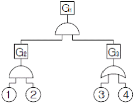
- 0.078
- 0.128
- 0.651
- 0.782
(정답률: 57%)
32. 시스템의 고장을 분석하는 데에는 고장밀도함수 f(t)보다 고장률함수 λ(t)가 더 중요한 의미를 갖는다. 고장률함수 λ(t)를 바르게 표시한 것은? (단, R(t)는 신뢰도 함수, F(t)는 불신뢰도 함수를 의미한다.)
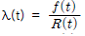
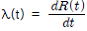
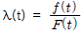
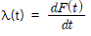
(정답률: 51%)
33. 다음의 불대수 (Boolean Algebra) 식에서 틀린 것은?
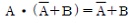
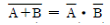
- A+A=A
- A ㆍ(BㆍC)=(AㆍB)ㆍC
(정답률: 39%)
34. 다음 그림과 같이 7개의 기기로 구성된 시스템이 있다. 각 신뢰도가 보기와 같은 경우 이 시스템의 신뢰도는?
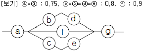
- 0.5552
- 0.6234
- 0.7427
- 0.9740
(정답률: 48%)
35. 다음 중 리스크(Risk)에 대하여 바르게 나타낸 식은?
- 피해의 크기 × 발생확률
- 노동손실일수 × 총 노동시간
- 발생확률 × 총 노동시간
- 피해의 크기 × 재해발생건수
(정답률: 47%)
36. 손이나 특정 신체부위에 발생하는 누적손상장애(CTDs)의 발생 인자와 가장 거리가 먼 것은?
- 무리한 힘
- 다습한 환경
- 장시간의 진동
- 반복도가 높은 작업
(정답률: 73%)
37. 조작자와 제어버튼 사이의 거리, 조작에 필요한 힘 등을 정할 때 적용되는 인체측정자료 응용원칙은 어느 것인가?
- 평균치 설계원칙
- 최대치 설계원칙
- 최소치 설계원칙
- 조절식 설계원칙
(정답률: 37%)
38. 시스템 안전해석 방법 중 “HAZOP”에서 “완전 대체”를 의미하는 유인어는?
- NOT
- REVERSE
- PART OF
- OTHER THAN
(정답률: 66%)
39. 다음 중 점멸-융합(flicker-fusion) 주파수의 용도로 옳은 것인가?
- 야간 시력의 척도
- 반응 시간의 척도
- 피로 정도의 척도
- 적외선 감지 능력의 척도
(정답률: 51%)
40. 화학설비의 안정성 평가에서 정량적 평가의 항목에 해당되지 않는 것은?
- 압력
- 온도
- 공정
- 설비용량
(정답률: 72%)
3과목: 기계위험방지기술
41. 보일러의 안전밸브는 보일러의 증기압력이 규정 이상이 될 때 자동적으로 열리게 하여 일정 압력을 유지하는 장치이다. 현재 가장 많이 사용되는 안전밸브는?
- 중추 안전밸브
- 스프링 안전밸브
- 지렛대 안전밸브
- 플랜지 안전밸브
(정답률: 58%)
42. 일반적으로 프레스에서 사용하는 수공구로 적합하지 않는 것은?
- 플라이어류
- 마그넷공구류
- 진공컵류
- 엔드밀류
(정답률: 37%)
43. 프레스 작업에서 작동이 불완전하면 큰 재해 발생의 우려가 있는 것은?
- 클러치
- 동력부분
- 받침대
- 전원장치
(정답률: 50%)
44. 선반에서 사용하는 바이트와 관련된 방호장치는?
- 심압대
- 터릿
- 칩브레이커
- 주축대
(정답률: 64%)
45. 다음 중 보일러의 방호 장치로 볼 수 없는 것은?
- 언로드 밸브
- 압력방출장치
- 압력제한 스위치
- 고저수위조절장치
(정답률: 74%)
46. 밀링머신의 작업 안전수칙 중 틀린 것은?
- 제품을 따 내는 데에는 손끝을 대지 말 것
- 운전 중 가공면에 손을 대지 말 것
- 칩을 제거할 때에는 커터의 운전을 중지할 것
- 작업을 할 때에는 장갑을 끼고 할 것
(정답률: 77%)
47. 컨베이어 역전방지 장치 형식이 아닌 것은?
- 롤러식
- 라쳇식
- 권과방지장치
- 전기 브레이크
(정답률: 59%)
48. 컨베이어의 안전(방호)장치에 해당 되지 않는 것은?
- 비상정지장치
- 덮개, 울
- 시건장치
- 건널다리
(정답률: 59%)
49. 산업안전기준에 정하고 있는 승강기의 방호장치가 아닌 것은?
- 조속기
- 출입문 인터로크
- 이탈방지장치
- 파이널 리밋 스위치
(정답률: 42%)
50. 너트의 풀림 방지용으로 사용되는 것이 아닌 것은?
- 록너트(lock nut)
- 평와셔
- 분할핀
- 세트나사
(정답률: 48%)
51. 롤러 작업에서 송급대(feed table)와 위험 부위에서 가드(guard)의 적절한 위치까지 거리 X=80mm라고 할 때 적절한 가드 개구부와의 간격(Y)으로 다음 중 가장 적합한 것은?
- 6mm
- 10mm
- 18mm
- 29mm
(정답률: 51%)
52. 온도변화에 따른 파손을 방지하기 위한 이음은?
- 플랜지이음
- 나사이음
- 신축이음
- 용접이음
(정답률: 51%)
53. 반복응력을 받게 되는 기계구조부분의 설계에서 허용응력을 결정하기 위한 기초강도로 가장 적합한 것은?
- 항복점(Yield point)
- 극한강도(Ultimate strength)
- 크리프한도(Creep limit)
- 피로한도(Fatigue limit)
(정답률: 59%)
54. 와이어로프의 표기에서 “6×19” 중 숫자 “6”이 의미하는 것은?
- 소선의 직경(mm)
- 소선의 수량(wire수)
- 꼬임의 수량(strand수)
- 로프의 인장강도(kg/cm2)
(정답률: 55%)
55. 기계의 각 작동 부분 상호 간을 전기적, 기구적, 유공압장치 등으로 연결해서 기계의 각 작동 부분이 정상으로 작동하기 위한 조건이 만족 되지 않을 경우 자동적으로 그 기계를 작동할 수 없도록 하는 것은?
- 인터록 기구
- 과부하방지장치
- 트립기구
- 오버런기구
(정답률: 66%)
56. 기계의 부품에 작용하는 하중에서 안전율을 가장 작게 취하여야 할 것은?
- 반복하중
- 교번하중
- 충격하중
- 정하중
(정답률: 56%)
57. 용접의 결함으로 볼 수 없는 것은?
- 언더컷(under cut)
- 비드(bead)
- 용입불량
- 기공(blow hole)
(정답률: 58%)
58. 역류(逆流)를 방지하여 유체를 한쪽 방향으로만 흘러 가게하는 밸브는?
- 안전밸브
- 파열판
- 체크밸브
- 언로드밸브
(정답률: 52%)
59. 선반작업에 관한 안전설명 중 틀린 것은?
- 일감의 길이가 직경의 25배이면 방진구를 사용하지 않는다.
- 가공물이 길 때에는 심압대로 지지하고 가공한다.
- 보링 작업중에는 칩(chip)을 제거하지 않는다.
- 장갑, 반지 등을 착용하지 않도록 한다.
(정답률: 61%)
60. 비파괴 검사 방법이 아닌 것은?
- 음향방출시험
- 초음파 탐상시험
- 누수시험
- 인장시험
(정답률: 72%)
4과목: 전기위험방지기술
61. 심실세동 전류를
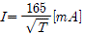
라면 감전되었을 경우 심실세동시에 인체에 직접 받는 전기에너지는 약 몇 [cal]인가? (단, T는 통전시간으로 1초이며, 인체의 저항은 500Ω으로 한다.)- 0.52
- 1.35
- 2.14
- 3.26
(정답률: 36%)
62. 부하에 400A의 전류가 흐르는 단상2선식의 한 전선에서 허용되는 누설전류는 몇 [A]인가?
- 0.1
- 0.2
- 0.4
- 0.5
(정답률: 60%)
63. 불꽃이나 아크 등이 발생하지 않는 기기의 경우 기기의 표면온도를 낮게 유지하여 고온으로 인화 착화의 우려를 없애고 또 기계적, 전기적으로 안정성을 높게 한 방폭구조를 무엇이라 하는가?
- 유압방폭
- 내압(內壓) 방폭
- 내압(耐壓) 방폭
- 안전증 방폭
(정답률: 56%)
64. 부도체의 대전은 도체의 대전과는 달리 복잡해서 폭발, 화재의 발생한계를 추정하는데 충분한 유의가 필요하다. 다음 중 그 유의사항이 아닌 것은?
- 대전 상태가 매우 불균일한 경우
- 대전량 또는 대전의 극성이 매우 변화하는 경우
- 부도체 중에 국부적으로 도전율이 높은 곳이 있고, 이것이 대전한 경우
- 대전되어 있는 부도체의 뒷면 또는 근방에 접지되지 않는 도체가 있는 경우
(정답률: 44%)
65. 배전선로에 정전작업 중 단락접지기구를 사용하는 목적에 적합한 것은?
- 통신선 유도 장해 방지
- 배전용 기계 기구의 보호
- 혼촉 또는 오동작에 의한 감전방지
- 배전선 통전시 전유경도 저감
(정답률: 70%)
66. 폭발성 가스의 발화온도가 450℃를 초과하고, 설비의 허용 최대 표면온도가 320℃ 이상인 가스의 발화도 등급은?
- G1
- G2
- G3
- G4
(정답률: 58%)
67. 전기설비의 잠재적 점화원인 것은?
- 직류전동기의 정류자
- 전동기의 고온부
- 보호계전기의 전기접점
- 변압기의 권선
(정답률: 30%)
68. 전격재해의 요인 중 2차적 감전위험 요소에 해당되지 않는 것은?
- 인체의 조건(저항)
- 전압
- 주파수
- 전류
(정답률: 30%)
69. 안전모의 “내전압성”이란 몇 [V] 이하의 전압에서 견딜수 있는 것을 의미하는가?
- 4000
- 5000
- 6000
- 7000
(정답률: 65%)
70. 가연성 가스 또는 인화성 액체의 용기류가 부식, 열화 등으로 파손되어 가스 또는 액체가 누출 할 염려가 있는 경우의 방폭지역을 무엇이라 하는가?
- 0종 장소
- 1종 장소
- 2종 장소
- 비방폭지역
(정답률: 39%)
71. 감전방지용 누전차단기의 정격감도전류 및 작동시간은 얼마인가?
- 30mA 이하, 0.1초 이내
- 30mA 이하, 0.03초 이내
- 50mA 이하, 0.1초 이내
- 50mA 이하, 0.03초 이내
(정답률: 67%)
72. 정전기에 의한 생산장해가 아닌 것은?
- 가루(분진)에 의한 눈금의 막힘
- 제사공장에서의 실의 절단, 보푸라기 발생(보풀일기)
- 인쇄공정의 종이파손, 인쇄선명도 불량, 겹침, 오손
- 방전 전류에 의한 반도체 소자의 입력임피던스 상승
(정답률: 41%)
73. 다른 두 물체가 접촉할 때 접촉 전위차가 발생하는 원인으로 옳은 것은?
- 두 물체의 온도의 차
- 두 물체의 습도의 차
- 두 물체의 일함수의 차
- 두 물체의 밀도의 차
(정답률: 49%)
74. 누전경보기의 수신부는 옥내의 점검이 편리한 장소 등에 설치하여야 한다. 다음 중 누전 경보기의 수신부를 설치 할 수 있는 장소로 알맞은 것은?
- 가연성의 증기, 먼지, 가스 등이나 부식성의 증기, 가스 등이 다량으로 체류하는 장소
- 화약류를 제조하거나 저장 또는 취급하는 장소
- 습도가 높은 장소
- 방식효과가 높은 장소
(정답률: 52%)
75. 교류아크 용접기의 자동전격방지란 용접기의 2차전압을 25V 이하로 자동조절하여 작업자의 전격재해를 방지하는 것이다. 다음 중 전격방지기의 기능으로 가장 옳은 것은?
- 아크를 발생시킬 때만 기능 유지
- 용접작업 전체시간 동안 기능유지
- 용접작업을 진행하고 있는 동안만 기능유지
- 용접작업 중단 직후부터 다음 아크 발생시까지 기능 유지
(정답률: 63%)
76. 국내 전기설비의 방폭구조의 기호와 기호의 의미가 서로 맞지 않는 것은?
- 본질안전방폭구조 : I
- 내압방폭구조 : s
- 유입방폭구조 : o
- 안전증방폭구조 : e
(정답률: 57%)
77. 다음 중 최소감지 전류에 대한 설명으로 알맞은 것은?
- 상용주파수 60Hz 교류인 경우는 전압이 크지 않으면 느낄 수 없는 전류이다.
- 전원의 종류 전극의 형태 등에 따라 다르며, 성인 남자의 경우 상용주파수 60Hz 교류에서 약 1mA 이다.
- 직류 교류 관계없이 약 1mA이며, 특히 여자의 경우 성인 남자의 70% 인 0.7mA에서 느낄 수 있는 전류의 크기를 말한다.
- 직류를 기준으로 한 값이며, 약 1mA에서 느낄 수 있는 전류이다.
(정답률: 53%)
78. 피뢰기로서 갖추어야 할 성능 중 옳지 않은 것은?
- 방전 개시전압이 높을 것
- 뇌전류 방전능력이 클 것
- 제한전압이 낮을 것
- 속류 차단을 확실하게 할 수 있을 것
(정답률: 63%)
79. 다음 중 시동감도에 대해 옳게 설명한 것은?
- 용접봉을 모재에 접촉시켜 아크를 발생시킬 때 전격방지 장치가 동작 할 수 있는 용접기의 2차측 최대저항을 말한다.
- 안전전압 (24V 이하)이 2차측 전압(85~95V)으로 얼마나 빨리 절환 되는가 하는 것이 시동감도이다.
- 시동감도는 낮을수록 좋으나 시동시간은 0.6초를 그 상한치로 하는 것이 바람직하다.
- 용접봉에서 아크를 발생시키고 있을 때 누설전류가발생하면 전격방지장치를 작동시켜야 할지 운전을 계속해야 할지를 결정해야 하는 민감도를 말한다.
(정답률: 50%)
80. 1[C]을 갖는 2개의 전하가 공기 중에서 1[m]의 거리에 있을 때 이들 사이에 작용하는 정전력은 얼마인가?
- 8.854×10-12[N]
- 1[N]
- 3×103[N]
- 9×10⁹[N]
(정답률: 48%)
5과목: 화학설비위험방지기술
81. 산업안전보건법에서 분류한 위험물질의 종류와 이에 해당되는 것을 올바르게 짝지어진 것은?
- 폭발성 물질 및 유기과산화물 : 마그네슘분말
- 물반응성 물질 및 인화성 고체 : 염소산
- 인화성 액체 : 유기과산화물
- 산화성 액체 및 산화성 고체 : 중크롬산
(정답률: 45%)
82. 대기압에서 물의 엔탈피가 1kcal/kg 이었던 것이 가압하여 1.45kcal/kg을 나타내었다면 flash율은 얼마인가? (단, 물의 기화열은 540cal/g 이라고 가정한다.)
- 0.00083
- 0.0083
- 0.0015
- 0.015
(정답률: 50%)
83. 다음 중 위험물질의 종류에 대한 설명으로 틀린 것은?
- 인화성 액체 : 대기압 하에서 인화점이 60℃ 이하인 인화성 액체
- 인화성 가스 : 폭발한계농도의 하한이 5% 이하 또는 상하한의 차가 10% 이상인 가스
- 폭발성물질 : 가열ㆍ마찰ㆍ충격 또는 다른 화학물질과의 접촉 등으로 인하여 산소 또는 산화제의 공급없이도 폭발 등 격렬한 반응을 일으킬 수 있는 고체나 액체
- 부식성물질 : 금속 등을 쉽게 부식시키고 인체에 접촉하면 심한 상해(화상)를 입히는 물질
(정답률: 52%)
84. 가연성가스의 폭발범위에 관한 설명으로 틀린 것은?
- 소수의 예외를 제외하고는 압력 증가에 따라 폭발상 한계와 하한계가 모두 현저히 증가한다.
- 온도의 상승과 함께 폭발하한계는 낮아진다.
- 온도의 상승과 함께 폭발범위는 넓어진다.
- 산소 중에서의 폭발범위는 공기 중에서 보다 넓어진다.
(정답률: 57%)
85. 다음 중 누설발화형 폭발재해의 예방 대책으로 틀린 것은?
- 불활성 가스의 치환
- 밸브의 오동작 방지
- 누설물질의 검지 경보
- 발화원 관리
(정답률: 53%)
86. 폭발하한계를 L, 폭발상한계를 U라 할 경우 다음 중 위험도(H)를 바르게 나타낸 것은?
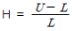
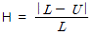
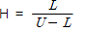
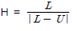
(정답률: 67%)
87. 고압가스 용기의 파열사고에서 그 직접적인 원인과 가장 거리가 먼 것은?
- 용기의 내압력 부족
- 용기 내 압력의 이상상승
- 용기에 부속된 압력계의 파열
- 용기 내에서의 폭발성 혼합가스의 발화
(정답률: 43%)
88. 압력용기, 배관, 덕트 및 붐베 등의 밀폐장치가 과잉압력 또는 진공에 의해 파손될 위험이 있을 경우 이를 방지하기 위한 안전장치로서 특히 화학변화에 의한 에너지 방출과 같이 짧은 시간 내의 급격한 압력변화에 적합한 것은?
- 파열판
- 체크밸브
- 대기밸브
- 벤트스택
(정답률: 54%)
89. 물 소화약제의 단점을 보완하기 위하여 물에 탄산칼륨(K2CO3) 등을 녹인 수용액으로서 부동성이 높은 알칼리성 소화약제는?
- 포 소화약제
- 분말 소화약제
- 강화액 소화약제
- CO2 소화약제
(정답률: 59%)
90. 다음과 같은 인화성 가스의 조성으로 이루어진 혼합가스의 폭발하한값은 약 얼마인가?
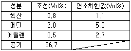
- 2.52 Vol%
- 5.83 Vol%
- 8.34 Vol%
- 12.25 Vol%
(정답률: 61%)
91. 다음 중 공업용 고압가스 용기의 도색방법으로 틀린 것은?
- 산소 - 녹색
- 암모니아 - 백색
- 아세틸렌 - 황색
- 액화염소 -주황색
(정답률: 55%)
92. 다음 중 대기압상의 공기ㆍ아세틸렌 혼합가스의 최소발화에너지(MIE)에 관한 설명으로 옳은 것은?
- 압력이 클수록 MIE는 증가한다.
- 불활성물질의 증가는 MIE를 감소시킨다.
- 대기압 상의 공기ㆍ아세틸렌 혼합가스의 경우는 약 9%에서 최대값을 나타낸다.
- 일반적으로 화학양론농도 보다도 조금 높은 농도일 때에 최소값이 된다.
(정답률: 37%)
93. 위험물 또는 위험물이 발생하는 물질을 가열ㆍ건조하는 건조설비 중 건조실을 설치하는 건축물의 구조를 독립된 단층건물로 해야 하는 기준으로 틀린 것은?
- 위험물을 가열ㆍ건조하는 경우 가열ㆍ건조기의 내용 적이 10m3 이상인 건조설비
- 위험물이 아닌 물질을 가열ㆍ건조하는 경우 고체 또는 액체 연료의 최대 사용량이 10kg/h 이상인 건조설비
- 위험물이 아닌 물질을 가열ㆍ건조하는 경우 기체 연료의 사용량 1m3 /h 이상인 건조설비
- 위험물이 아닌 물질을 가열ㆍ건조하는 경우 전기사용 정격용량이 10kW 이상인 건조설비
(정답률: 39%)
94. 화학설비 및 시설의 안전거리 기준으로 옳은 것은?
- 단위공정 시설 및 설비로부터 다른 단위공정 시설 및 설비의 사이는 설비의 외면으로부터 10m 이상으로 한다.
- 플레어스택으로부터 위험물질 저장탱크 사이는 플레어스택으로부터 반경 10m 이상으로 한다.
- 위험물 저장 탱크로부터 단위공정시설 및 설비사이는 저장탱크의 외면으로부터 10m 이상으로 한다.
- 사무실ㆍ연구실ㆍ실험실로부터 위험물질 하역설비 보일러 사이는 사무실 등의 외면으로부터 10m 이상으로 한다.
(정답률: 55%)
95. 안전밸브 등의 전ㆍ후단에 자물쇠형 또는 이에 준하는 형식의 차단밸브를 설치할 수 있는 경우 중 틀린 것은?
- 인접한 화학설비 및 그 부속설비에 안전밸브 등이 각각 설치되어 있고, 해당 화학설비 및 그 부속설비의 연결 배관에 차단밸브가 없는 경우
- 안전밸브 등의 배출용량의 3분의 1이상에 해당하는 용량의 자동압력조절밸브와 안전밸브 등이 직렬로 연결된 경우
- 화학설비 및 그 부속설비에 안전밸브 등이 복수방식으로 설치되어 있는 경우
- 열팽창에 의하여 상승된 압력을 낮추기 위한 목적으로 안전밸브가 설치된 경우
(정답률: 54%)
96. 다음중 CF3Br 소화약제를 가장 적절하게 표현한 것은?
- 하론 1031
- 하론 1211
- 하론 1301
- 하론 2402
(정답률: 63%)
97. 다음 중 광분해 반응을 일으키기 쉬운 물질은?
- Ba(NO3)2
- Ca(NO3)2
- KNO3
- AgNO3
(정답률: 52%)
98. 다음 중 독성이 가장 강한 가스는?
- NH3
- COCl2
- Cl2
- H2S
(정답률: 57%)
99. 증류탑의 점검항목 중 일상점검 항목에 해당되는 것은?
- 도장의 열화 상태
- 다공판의 loading 유무
- 트레이의 부식상태
- 용접선의 상태
(정답률: 37%)
100. 반응기 중 관형 반응기의 특징에 대한 설명으로 틀린 것은?
- 가는 관으로 된 긴 형태의 반응기이다.
- 전열면적이 작아 온도조절이 어렵다.
- 기상 또는 액상 등 반응속도가 빠른 물질에 사용된다.
- 처리량이 많아 대규모 생산에 쓰이는 것이 많다.
(정답률: 46%)
6과목: 건설안전기술
101. 본 터널(main tunnel)을 시공하기 전에 터널에서 약간 떨어진 곳에 지질조사, 환기, 배수, 운반 등의 상태를 알아보기 위하여 설치하는 터널은?
- 파일럿(pilot) 터널
- 프리패브(prefab) 터널
- 사이드(side) 터널
- 실드(shield) 터널
(정답률: 61%)
102. 오일러의 좌굴하중공식
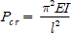
적용되는 기둥단부의 구속조건으로 옳은 것은? (단, ℓ(단, ℓ은 부재의 길이)- 양단고정
- 일단고정 타단 자유단
- 일단고정 타단 힌지
- 양단힌지
(정답률: 32%)
103. 지게차의 작업시작 전 점검사항이 아닌 것은?
- 권과방지장치, 브레이크, 클러치 및 운전장치 기능의 이상 유무
- 하역장치 및 유압장치 기능의 이상 유무
- 제동장치 및 조종장치 기능의 이상 유무
- 전조등, 후미등, 방향지시기 및 경보장치 기능의 이상유무
(정답률: 58%)
104. 도로건설 작업중 측구를 굴착하고자 한다. 가장 적합한 기계는 어느 것인가?
- 드래그라인
- 백호우
- 불도저
- 그레이더
(정답률: 29%)
1⑤. 사다리식 통로의 구조에 대해 준수하여야 할 사항 중 사다리의 폭은 최소 몇 cm 이상이어야 하는가?
- 30cm
- 40cm
- 50cm
- 60cm
(정답률: 44%)
106. 표준관입시험에서 30cm 관입에 필요한 타격회수(N)가 50 이상 일 때 모래의 상대밀도는 어떤 상태인가?
- 몹시 느슨하다.
- 느슨하다.
- 보통이다.
- 대단히 조밀하다.
(정답률: 63%)
107. 건설업 산업안전보건관리비 중 안전시설비로 사용할수 없는 것은?
- 외부인 출입금지를 위한 가설울타리
- 추락방지용 방망
- 안전대걸이용 로프
- 각종 안전표지 등에 소요되는 비용
(정답률: 51%)
108. 그림과 같이 두 곳에 줄을 달아 중량물을 들 때, 매단줄의 각도(α)가 얼마일 때 힘 P의 크기가 최소인가?
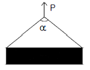
- 0°
- 60°
- 120°
- 각도와 상관없이 모두 같다.
(정답률: 45%)
109. 콘크리트 타설 이후 발생되는 블리딩(bleeding)을 방지하기 위한 대책으로 옳지 않은 것은?
- 단위 수량을 적게 해야 한다.
- 분말도가 낮은 시멘트를 사용한다.
- 골재 중 먼지와 같은 유해물의 함량을 적게 한다.
- AE제나 포졸란 등을 사용한다.
(정답률: 52%)
110. 강관비계를 조립할 때 준수하여야 할 사항으로 잘못된 것은?
- 띠장간격은 2m 이하로 설치하되, 첫 번째 띠장은 지상으로부터 3m 이하의 위치에 설치할 것
- 강관비계 기둥의 간격은 띠장방향에서 1.5m 이상 1.8m 이하로 할 것
- 비계기둥의 최고부로부터 31m되는 지점 밑부분의 비계기둥의 2개의 강관으로 묶어 세울 것
- 비계기둥간의 적재하중은 400kg을 초과하지 아니하도록 할 것
(정답률: 58%)
111. 연약지반 처리공법 중 점성토지반의 개량공법이 아닌 것은?
- 페이퍼 드레인(paper drain)공법
- 여성토(preloading)공법
- 바이브로 플로테이션(vibro flotation)공법
- 샌드 드레인(sand drain)공법
(정답률: 49%)
112. 지름이 10cm이고 높이가 20cm인 원기둥 콘크리트 공시체가 할렬 인장강도 시험에서 10,000kg에서 파괴되었다. 이 때 콘크리트의 할렬 인장강도는 몇 kg/cm2인가?
- 21.8
- 31.8
- 41.8
- 51.8
(정답률: 34%)
113. 통나무비계 중 외줄비계, 쌍줄비계 또는 돌출비계의 벽이음의 간격은 수직방향에서 ( ① )m 이하, 수평방향에서 ( ② )m 이하로 한다. ( )안의 수치로서 옳은 것은?( 순서대로 ①, ②)
- 5.5, 7.5
- 5, 5
- 6, 8.5
- 5, 7
(정답률: 40%)
114. 해체(철거)용 장비로서 작은 부재의 파쇄에 유리하고 소음, 진동 및 분진이 발생되므로 작업원은 보호구를 착용하여야 하고 특히 작업원의 작업시간을 제한하여야 하는 장비는?
- 압쇄기
- 철해머
- 대형 브레이커
- 핸드 브레이커
(정답률: 61%)
115. 비계의 높이가 2미터 이상인 작업장소에는 작업발판을 설치해야 한다. 이때 작업발판의 설치기준으로 틀린 것은?
- 작업발판의 폭은 40센티미터 이상으로 설치한다.
- 작업발판재료는 뒤집히거나 떨어지지 않도록 2개소 이상의 지지물에 연결하거나 고정한다.
- 추락의 위험성이 있는 장소에는 안전난간을 설치한다.
- 발판재료 간의 틈은 5센티미터 이하로 한다.
(정답률: 63%)
116. 건설현장 토사붕괴 원인으로 틀린 것은?
- 지하수위의 증가
- 내부마찰각의 증가
- 점착력의 감소
- 차량에 의한 진동하중 증가
(정답률: 59%)
117. 다음 중 산업안전기준에 관한 규칙에서 정의하고 있는 양중기에 해당되지 않는 것은?
- 최대하중이 12톤(Ton)인 타워크레인(Tower Crane)
- 최대하중이 2톤(Ton)인 리프트(Lift)
- 최대하중이 5톤(Ton)인 곤돌라
- 최대하중이 0.2톤(Ton)인 승강기
(정답률: 63%)
118. 다음 중 작업장으로 통하는 장소 또는 작업장내에 근로자가 사용하기 위한 안전한 통로를 설치할 때 가설통로의 설치기준 및 구조의 기준으로서 알맞지 않은 것은?
- 통로에는 75럭스(Lux)이상의 조명시설을 하여야 한다.
- 통로의 주요한 부분에는 통로표시를 하여야 한다.
- 수직갱에 가설된 통로의 길이가 10미터 이상인 때에는 7미터 이내마다 계단참을 설치하여야 한다.
- 경사가 15도를 초과하는 때에는 미끄러지지 아니하는 구조로 하여야 한다.
(정답률: 62%)
119. 갑판의 윗면에서 선창 밑바닥까지의 깊이가 최소 몇m를 초과하는 선창의 내부에는 화물취급작업을 하는 때에는 당해 작업에 종사하는 근로자가 안전하게 통행할 수 있는 설비를 설치하여야 하는가?
- 1.3m
- 1.5m
- 1.8m
- 2.0m
(정답률: 50%)
120. 사다리식 통로 설치시 길이가 10m 이상인 때에는 몇m 이내마다 계단참을 설치해야 하는가?
- 5m
- 7m
- 9m
- 10m
(정답률: 54%)
설명: 주의의 특징으로는 선택성, 특수성, 방향성이 있습니다. 이 중 "특수성"은 다른 대상과 구별되는 독특한 특징을 가지고 있음을 의미합니다. 반면 "변동성"은 가격 등이 변동하는 정도를 나타내는 용어로, 다른 대상과 구별되는 독특한 특징을 가지고 있지 않습니다. 따라서 "특수성"이 주의의 특징과 가장 거리가 먼 것입니다.